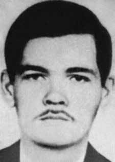

Custódio
Saraiva
Neto
CIRCUNSTÂNCIAS DA MORTE
Segundo o “Relatório Arroyo”, Custódio Saraiva Neto era uma das quinze pessoas que se encontravam no acampamento da Comissão Militar na hora do tiroteio do dia 25 de dezembro de 1973. Ele e “Lia” (Telma Regina Cordeiro Corrêa) faziam a guarda na parte de baixo do acampamento. Nos Relatórios das Forças Armadas, de 1993, consta que Custódio teria morrido em Xambioá (TO) no dia 15 de fevereiro de 1974. A cidade de Xambioá (TO) era sede de uma base militar utilizada na repressão aos guerrilheiros, mas não há informações disponíveis sobre a prisão de Custódio ou as circunstâncias de seu desaparecimento.
According to the “Arroyo Report”, Custódio Saraiva Neto was one of fifteen people who were in the Military Commission camp at the time of the shooting on December 25, 1973. He and “Lia” (Telma Regina Cordeiro Corrêa) were guarding the lower part of the camp. In the 1993 Armed Forces Reports, it is stated that Custódio died in Xambioá (TO) on February 15, 1974. The city of Xambioá (TO) was home to a military base used in the repression of guerrillas, but there is no information available about Custódio's arrest or the circumstances of his disappearance.
Según el “Informe Arroyo”, Custódio Saraiva Neto era una de las quince personas que se encontraban en el campamento de la Comisión Militar en el momento del tiroteo, el 25 de diciembre de 1973. Él y “Lia” (Telma Regina Cordeiro Corrêa) custodiaban la parte baja del campamento. En los Informes de las Fuerzas Armadas de 1993 se afirma que Custódio murió en Xambioá (TO) el 15 de febrero de 1974. La ciudad de Xambioá (TO) albergaba una base militar utilizada en la represión de la guerrilla, pero no hay información disponible sobre la detención de Custódio ni sobre las circunstancias de su desaparición.